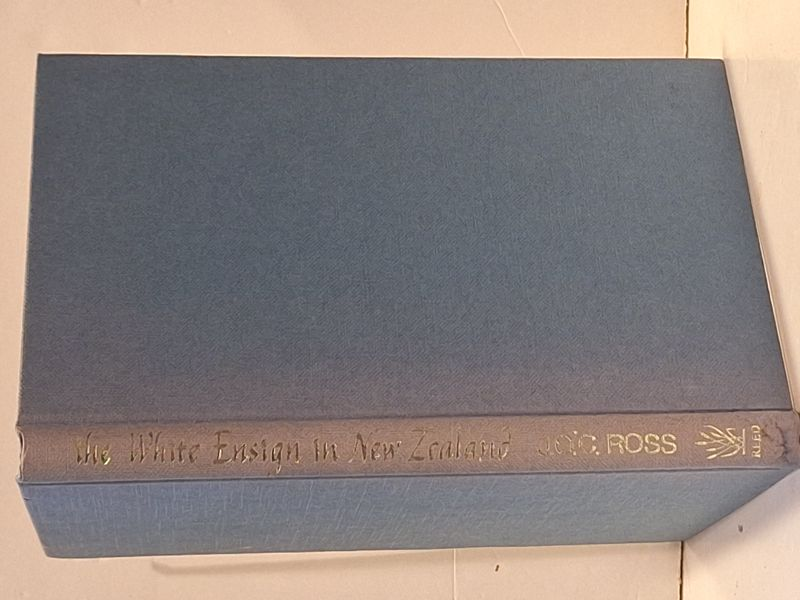

The White Ensign in Early New Zealand
J. O'C. Ross · A. H. & A. W. Reed, Wellington, 1967

C$18 · Very Good condition
First Edition (A. H. & A. W. Reed, Wellington / Auckland / Artarmon NSW, 1967). Stated 'First published 1967' on copyright page; copyright 1967 J. O'C. Ross; set in 10/12 point Life by Linotype Service, Palmerston North, and printed offset by Continental Printing Co. Ltd, Hong Kong. Hardcover in blue cloth boards with gilt spine titles ('THE WHITE ENSIGN IN NEW ZEALAND / J. O'C. ROSS / REED' - note spine omits 'Early'; full title only on title page). Dust jacket NOT present. Boards clean, gilt titles bright and legible, tight square binding, no foxing, no prior-owner inscriptions, no library marks. A short and uncommon naval history of the Royal Navy's role in colonial New Zealand - only four copies catalogued worldwide on AbeBooks at time of listing, all sourced from NZ or UK sellers.
Details
- Publisher: A. H. & A. W. Reed, Wellington, 1967
- Binding: Hardcover
- Edition: First Edition
- Condition: Very Good
- Category: Military